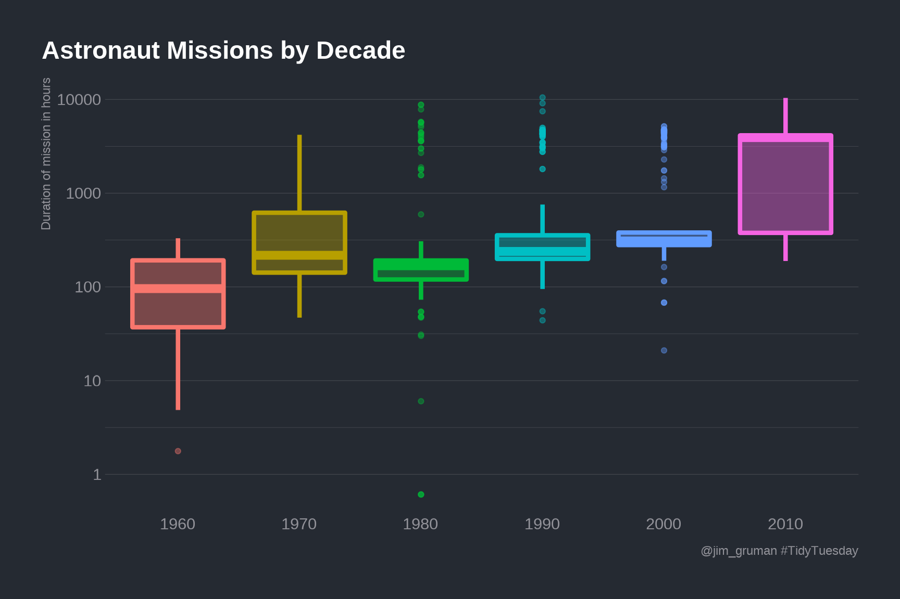
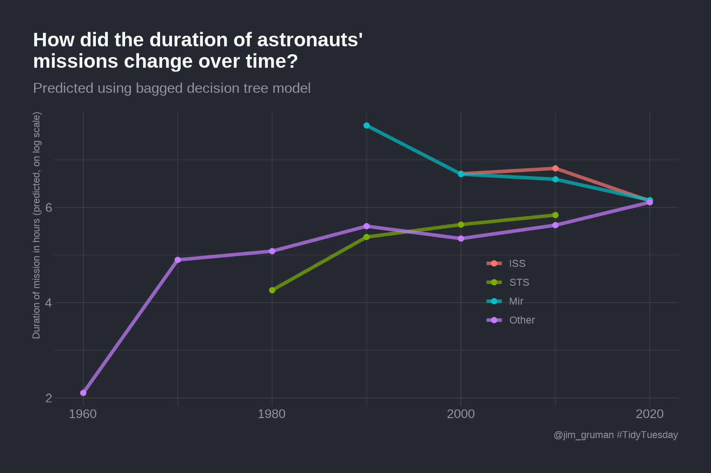
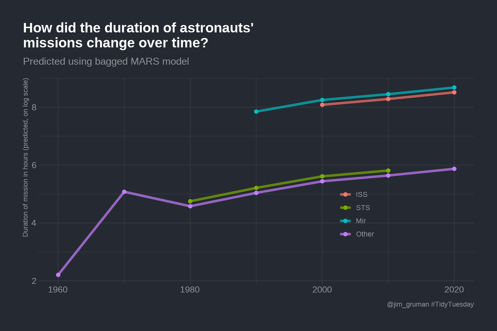

Last updated: 2020-10-10
Checks: 7 0
Knit directory: myTidyTuesday/
This reproducible R Markdown analysis was created with workflowr (version 1.6.2). The Checks tab describes the reproducibility checks that were applied when the results were created. The Past versions tab lists the development history.
Great! Since the R Markdown file has been committed to the Git repository, you know the exact version of the code that produced these results.
Great job! The global environment was empty. Objects defined in the global environment can affect the analysis in your R Markdown file in unknown ways. For reproduciblity it’s best to always run the code in an empty environment.
The command set.seed(20200907) was run prior to running the code in the R Markdown file. Setting a seed ensures that any results that rely on randomness, e.g. subsampling or permutations, are reproducible.
Great job! Recording the operating system, R version, and package versions is critical for reproducibility.
Nice! There were no cached chunks for this analysis, so you can be confident that you successfully produced the results during this run.
Great job! Using relative paths to the files within your workflowr project makes it easier to run your code on other machines.
Great! You are using Git for version control. Tracking code development and connecting the code version to the results is critical for reproducibility.
The results in this page were generated with repository version 467d8cf. See the Past versions tab to see a history of the changes made to the R Markdown and HTML files.
Note that you need to be careful to ensure that all relevant files for the analysis have been committed to Git prior to generating the results (you can use wflow_publish or wflow_git_commit). workflowr only checks the R Markdown file, but you know if there are other scripts or data files that it depends on. Below is the status of the Git repository when the results were generated:
Ignored files:
Ignored: .Rhistory
Ignored: .Rproj.user/
Untracked files:
Untracked: figure/
Note that any generated files, e.g. HTML, png, CSS, etc., are not included in this status report because it is ok for generated content to have uncommitted changes.
These are the previous versions of the repository in which changes were made to the R Markdown (analysis/Astronaut.Rmd) and HTML (docs/Astronaut.html) files. If you’ve configured a remote Git repository (see ?wflow_git_remote), click on the hyperlinks in the table below to view the files as they were in that past version.
| File | Version | Author | Date | Message |
|---|---|---|---|---|
| html | 834b1a2 | opus1993 | 2020-09-10 | Build site. |
| Rmd | 537b805 | opus1993 | 2020-09-10 | wflow_publish(“analysis/Astronaut.Rmd”) |
| html | 0221a96 | opus1993 | 2020-09-07 | Build site. |
| Rmd | 61e1878 | opus1993 | 2020-09-07 | wflow_publish(“analysis/Astronaut.Rmd”) |
This week’s R4DS Online Learning Community #TidyTuesday event is Astronaut missions. The goal of TidyTuesday is to apply your R skills, get feedback, explore other’s work, and connect with the greater #RStats community!
Download the weekly data and make available in the tt object.
tt <- tt_load("2020-07-14")
Downloading file 1 of 1: `astronauts.csv`Take a look at the readme for the weekly data to get insight on the dataset. This includes a data dictionary, source, and a link to an article on the data.
ttTake an initial look at the format of the data available.
tt %>%
map(glimpse)Rows: 1,277
Columns: 24
$ id <dbl> 1, 2, 3, 4, 5, 6, 7, 8, 9, 10, 11, 12, 13,...
$ number <dbl> 1, 2, 3, 3, 4, 5, 5, 6, 6, 7, 7, 7, 8, 8, ...
$ nationwide_number <dbl> 1, 2, 1, 1, 2, 2, 2, 4, 4, 3, 3, 3, 4, 4, ...
$ name <chr> "Gagarin, Yuri", "Titov, Gherman", "Glenn,...
$ original_name <chr> "<U+0413><U+0410><U+0413><U+0410><U+0420><U+0418><U+041D> <U+042E><U+0440><U+0438><U+0439> <U+0410><U+043B><U+0435><U+043A><U+0441><U+0435><U+0435><U+0432><U+0438><U+0447>", "<U+0422><U+0418><U+0422><U+041E><U+0412> <U+0413><U+0435><U+0440><U+043C><U+0430><U+043D> <U+0421>...
$ sex <chr> "male", "male", "male", "male", "male", "m...
$ year_of_birth <dbl> 1934, 1935, 1921, 1921, 1925, 1929, 1929, ...
$ nationality <chr> "U.S.S.R/Russia", "U.S.S.R/Russia", "U.S."...
$ military_civilian <chr> "military", "military", "military", "milit...
$ selection <chr> "TsPK-1", "TsPK-1", "NASA Astronaut Group ...
$ year_of_selection <dbl> 1960, 1960, 1959, 1959, 1959, 1960, 1960, ...
$ mission_number <dbl> 1, 1, 1, 2, 1, 1, 2, 1, 2, 1, 2, 3, 1, 2, ...
$ total_number_of_missions <dbl> 1, 1, 2, 2, 1, 2, 2, 2, 2, 3, 3, 3, 2, 2, ...
$ occupation <chr> "pilot", "pilot", "pilot", "PSP", "Pilot",...
$ year_of_mission <dbl> 1961, 1961, 1962, 1998, 1962, 1962, 1970, ...
$ mission_title <chr> "Vostok 1", "Vostok 2", "MA-6", "STS-95", ...
$ ascend_shuttle <chr> "Vostok 1", "Vostok 2", "MA-6", "STS-95", ...
$ in_orbit <chr> "Vostok 2", "Vostok 2", "MA-6", "STS-95", ...
$ descend_shuttle <chr> "Vostok 3", "Vostok 2", "MA-6", "STS-95", ...
$ hours_mission <dbl> 1.77, 25.00, 5.00, 213.00, 5.00, 94.00, 42...
$ total_hrs_sum <dbl> 1.77, 25.30, 218.00, 218.00, 5.00, 519.33,...
$ field21 <dbl> 0, 0, 0, 0, 0, 0, 0, 0, 0, 0, 0, 0, 0, 0, ...
$ eva_hrs_mission <dbl> 0.00, 0.00, 0.00, 0.00, 0.00, 0.00, 0.00, ...
$ total_eva_hrs <dbl> 0.00, 0.00, 0.00, 0.00, 0.00, 0.00, 0.00, ...$astronauts
# A tibble: 1,277 x 24
id number nationwide_numb~ name original_name sex year_of_birth
<dbl> <dbl> <dbl> <chr> <chr> <chr> <dbl>
1 1 1 1 Gaga~ <U+0413><U+0410><U+0413><U+0410><U+0420><U+0418><U+041D> <U+042E><U+0440><U+0438><U+0439>~ male 1934
2 2 2 2 Tito~ <U+0422><U+0418><U+0422><U+041E><U+0412> <U+0413><U+0435><U+0440><U+043C><U+0430><U+043D>~ male 1935
3 3 3 1 Glen~ Glenn, John ~ male 1921
4 4 3 1 Glen~ Glenn, John ~ male 1921
5 5 4 2 Carp~ Carpenter, M~ male 1925
6 6 5 2 Niko~ <U+041D><U+0418><U+041A><U+041E><U+041B><U+0410><U+0415><U+0412> <U+0410><U+043D><U+0434>~ male 1929
7 7 5 2 Niko~ <U+041D><U+0418><U+041A><U+041E><U+041B><U+0410><U+0415><U+0412> <U+0410><U+043D><U+0434>~ male 1929
8 8 6 4 Popo~ <U+041F><U+041E><U+041F><U+041E><U+0412><U+0418><U+0427> <U+041F><U+0430><U+0432><U+0435>~ male 1930
9 9 6 4 Popo~ <U+041F><U+041E><U+041F><U+041E><U+0412><U+0418><U+0427> <U+041F><U+0430><U+0432><U+0435>~ male 1930
10 10 7 3 Schi~ Schirra, Wal~ male 1923
# ... with 1,267 more rows, and 17 more variables: nationality <chr>,
# military_civilian <chr>, selection <chr>, year_of_selection <dbl>,
# mission_number <dbl>, total_number_of_missions <dbl>, occupation <chr>,
# year_of_mission <dbl>, mission_title <chr>, ascend_shuttle <chr>,
# in_orbit <chr>, descend_shuttle <chr>, hours_mission <dbl>,
# total_hrs_sum <dbl>, field21 <dbl>, eva_hrs_mission <dbl>,
# total_eva_hrs <dbl>astronauts<-tt$astronauts
astronauts %>%
count(in_orbit, sort = TRUE)# A tibble: 289 x 2
in_orbit n
<chr> <int>
1 ISS 174
2 Mir 71
3 Salyut 6 24
4 Salyut 7 24
5 STS-42 8
6 explosion 7
7 STS-103 7
8 STS-107 7
9 STS-109 7
10 STS-110 7
# ... with 279 more rowsHow has the duration of missions changed over time?
astronauts %>%
mutate(
year_of_mission = 10 * (year_of_mission %/% 10),
year_of_mission = factor(year_of_mission)
) %>%
ggplot(aes(year_of_mission, hours_mission,
fill = year_of_mission, color = year_of_mission
)) +
geom_boxplot(alpha = 0.4, size = 1.5, show.legend = FALSE) +
scale_y_log10() +
labs(x = NULL, y = "Duration of mission in hours",
title = "Astronaut Missions by Decade",
caption = "@jim_gruman #TidyTuesday")+
theme(plot.title.position = "plot",
panel.grid.major.x = element_blank())
This duration is what we will to build a model to predict, using the other information in this per-astronaut-per-mission dataset. Let’s get ready for modeling next, by bucketing some of the spacecraft together and taking the logarithm of the mission length.
astronauts_df <- astronauts %>%
select(
name, mission_title, hours_mission,
military_civilian, occupation, year_of_mission, in_orbit
) %>%
mutate(in_orbit = case_when(
str_detect(in_orbit, "^Salyut") ~ "Salyut",
str_detect(in_orbit, "^STS") ~ "STS",
TRUE ~ in_orbit
)) %>%
filter(hours_mission > 0) %>%
mutate(hours_mission = log(hours_mission)) %>%
na.omit()Julia Silge advises that it may make more sense to perform transformations like taking the logarithm of the outcome during data cleaning, before feature engineering and using any tidymodels packages like recipes. This kind of transformation is deterministic and can cause problems for tuning and resampling. OK…
We can start by loading the tidymodels metapackage, and splitting our data into training and testing sets.
library(tidymodels)
astro_split <- initial_split(astronauts_df, strata = hours_mission)
astro_train <- training(astro_split)
astro_test <- testing(astro_split)Next, let’s preprocess our data to get it ready for modeling.
astro_recipe <- recipe(hours_mission ~ ., data = astro_train) %>%
update_role(name, mission_title, new_role = "id") %>%
step_other(occupation, in_orbit,
threshold = 0.005, other = "Other"
) %>%
step_dummy(all_nominal(), -has_role("id"))Let’s walk through the steps in this recipe.
First, we must tell the recipe() what our model is going to be (using a formula here) and what data we are using.
Next, update the role for the two columns that are not predictors or outcome. This way, we can keep them in the data for identification later.
There are a lot of different occupations and spacecraft in this dataset, so let’s collapse some of the less frequently occurring levels into an “Other” category, for each predictor.
Finally, we can create indicator variables.
We’re going to use this recipe in a workflow() so we don’t need to stress about whether to prep() or not.
astro_wf <- workflow() %>%
add_recipe(astro_recipe)
astro_wf== Workflow =====================================
Preprocessor: Recipe
Model: None
-- Preprocessor ---------------------------------
2 Recipe Steps
* step_other()
* step_dummy()For this analysis, we are going to build a bagging, i.e. bootstrap aggregating, model. This is an ensembling and model averaging method that:
improves accuracy and stability
reduces overfitting and variance
In tidymodels, you can create bagging ensemble models with baguette, a parsnip-adjacent package. The baguette functions create new bootstrap training sets by sampling with replacement and then fit a model to each new training set. These models are combined by averaging the predictions for the regression case, like what we have here (by voting, for classification).
Let’s make two bagged models, one with decision trees and one with MARS models.
library(baguette)
tree_spec <- bag_tree() %>%
set_engine("rpart", times = 25) %>%
set_mode("regression")
tree_specBagged Decision Tree Model Specification (regression)
Main Arguments:
cost_complexity = 0
min_n = 2
Engine-Specific Arguments:
times = 25
Computational engine: rpart mars_spec <- bag_mars() %>%
set_engine("earth", times = 25) %>%
set_mode("regression")
mars_specBagged MARS Model Specification (regression)
Engine-Specific Arguments:
times = 25
Computational engine: earth Let’s fit these models to the training data.
tree_rs <- astro_wf %>%
add_model(tree_spec) %>%
fit(astro_train)
tree_rs== Workflow [trained] ===========================
Preprocessor: Recipe
Model: bag_tree()
-- Preprocessor ---------------------------------
2 Recipe Steps
* step_other()
* step_dummy()
-- Model ----------------------------------------
Bagged CART (regression with 25 members)
Variable importance scores include:
# A tibble: 12 x 4
term value std.error used
<chr> <dbl> <dbl> <int>
1 year_of_mission 790. 16.1 25
2 in_orbit_Other 394. 38.4 25
3 occupation_flight.engineer 303. 34.8 25
4 in_orbit_STS 280. 18.9 25
5 in_orbit_Mir 204. 22.2 25
6 occupation_MSP 111. 13.1 25
7 in_orbit_Salyut 72.6 6.11 25
8 occupation_pilot 56.0 13.2 25
9 military_civilian_military 42.0 2.63 25
10 occupation_PSP 31.9 5.63 25
11 occupation_Other..space.tourist. 30.8 3.78 23
12 occupation_Other 14.2 2.69 24mars_rs <- astro_wf %>%
add_model(mars_spec) %>%
fit(astro_train)
mars_rs== Workflow [trained] ===========================
Preprocessor: Recipe
Model: bag_mars()
-- Preprocessor ---------------------------------
2 Recipe Steps
* step_other()
* step_dummy()
-- Model ----------------------------------------
Bagged MARS (regression with 25 members)
Variable importance scores include:
# A tibble: 10 x 4
term value std.error used
<chr> <dbl> <dbl> <int>
1 in_orbit_STS 100 0 25
2 in_orbit_Other 98.1 1.07 25
3 year_of_mission 79.7 3.50 25
4 in_orbit_Salyut 30.6 1.22 25
5 occupation_PSP 4.15 1.57 7
6 in_orbit_Mir 2.72 0.712 10
7 military_civilian_military 1.70 0.845 6
8 occupation_MSP 0.258 0.151 2
9 occupation_pilot 0.214 0 1
10 occupation_flight.engineer 0.119 0 1The models return aggregated variable importance scores, and we can see that the spacecraft and year are importance in both models.
Let’s evaluate how well these two models did by evaluating performance on the test data.
test_rs <- astro_test %>%
bind_cols(predict(tree_rs, astro_test)) %>%
rename(.pred_tree = .pred) %>%
bind_cols(predict(mars_rs, astro_test)) %>%
rename(.pred_mars = .pred)
test_rs# A tibble: 316 x 9
name mission_title hours_mission military_civili~ occupation year_of_mission
<chr> <chr> <dbl> <chr> <chr> <dbl>
1 Carp~ Mercury-Atla~ 1.61 military Pilot 1962
2 Coop~ Gemini 5 5.26 military commander 1965
3 Tere~ Vostok 6 4.26 military pilot 1963
4 Feok~ Voskhod 1 3.19 civilian MSP 1964
5 Gris~ Gemini 3 1.58 military commander 1965
6 Youn~ Gemini 10 4.26 military pilot 1966
7 Youn~ Apollo 16 5.58 military commander 1972
8 Love~ Apollo 13 4.96 military commander 1970
9 Staf~ Gemini 9A 4.28 military commander 1966
10 Arms~ Gemini 8 2.40 civilian commander 1966
# ... with 306 more rows, and 3 more variables: in_orbit <chr>,
# .pred_tree <dbl>, .pred_mars <dbl>We can use the yardstick::metrics() function for both sets of predictions.
test_rs %>%
metrics(hours_mission, .pred_tree)# A tibble: 3 x 3
.metric .estimator .estimate
<chr> <chr> <dbl>
1 rmse standard 0.726
2 rsq standard 0.710
3 mae standard 0.382test_rs %>%
metrics(hours_mission, .pred_mars)# A tibble: 3 x 3
.metric .estimator .estimate
<chr> <chr> <dbl>
1 rmse standard 0.631
2 rsq standard 0.776
3 mae standard 0.360Both models performed pretty similarly.
Let’s make some “new” astronauts to understand the kinds of predictions our bagged tree model is making.
new_astronauts <- crossing(
in_orbit = fct_inorder(c("ISS", "STS", "Mir", "Other")),
military_civilian = "civilian",
occupation = "Other",
year_of_mission = seq(1960, 2020, by = 10),
name = "id", mission_title = "id"
) %>%
filter(
!(in_orbit == "ISS" & year_of_mission < 2000),
!(in_orbit == "Mir" & year_of_mission < 1990),
!(in_orbit == "STS" & year_of_mission > 2010),
!(in_orbit == "STS" & year_of_mission < 1980)
)
new_astronauts# A tibble: 18 x 6
in_orbit military_civilian occupation year_of_mission name mission_title
<fct> <chr> <chr> <dbl> <chr> <chr>
1 ISS civilian Other 2000 id id
2 ISS civilian Other 2010 id id
3 ISS civilian Other 2020 id id
4 STS civilian Other 1980 id id
5 STS civilian Other 1990 id id
6 STS civilian Other 2000 id id
7 STS civilian Other 2010 id id
8 Mir civilian Other 1990 id id
9 Mir civilian Other 2000 id id
10 Mir civilian Other 2010 id id
11 Mir civilian Other 2020 id id
12 Other civilian Other 1960 id id
13 Other civilian Other 1970 id id
14 Other civilian Other 1980 id id
15 Other civilian Other 1990 id id
16 Other civilian Other 2000 id id
17 Other civilian Other 2010 id id
18 Other civilian Other 2020 id id Let’s start with the decision tree model.
new_astronauts %>%
bind_cols(predict(tree_rs, new_astronauts)) %>%
ggplot(aes(year_of_mission, .pred, color = in_orbit)) +
geom_line(size = 1.5, alpha = 0.7) +
geom_point(size = 2) +
labs(
x = NULL, y = "Duration of mission in hours (predicted, on log scale)",
color = NULL, title = "How did the duration of astronauts' \nmissions change over time?",
subtitle = "Predicted using bagged decision tree model",
caption = "@jim_gruman #TidyTuesday"
)+
theme(plot.title.position = "plot",
legend.position = c(0.73, 0.4))
What about the MARS model?
new_astronauts %>%
bind_cols(predict(mars_rs, new_astronauts)) %>%
ggplot(aes(year_of_mission, .pred, color = in_orbit)) +
geom_line(size = 1.5, alpha = 0.7) +
geom_point(size = 2) +
labs(
x = NULL, y = "Duration of mission in hours (predicted, on log scale)",
color = NULL, title = "How did the duration of astronauts' \nmissions change over time?",
subtitle = "Predicted using bagged MARS model",
caption = "@jim_gruman #TidyTuesday"
)+
theme(plot.title.position = "plot",
legend.position = c(0.73, 0.35))
You can really get a sense of how these two kinds of models work from the differences in these plots (tree vs. splines with knots), but from both, we can see that missions to space stations are longer, and missions in that “Other” category change characteristics over time pretty dramatically.
sessionInfo()R version 4.0.0 (2020-04-24)
Platform: x86_64-w64-mingw32/x64 (64-bit)
Running under: Windows 10 x64 (build 19041)
Matrix products: default
locale:
[1] LC_COLLATE=English_United States.1252
[2] LC_CTYPE=English_United States.1252
[3] LC_MONETARY=English_United States.1252
[4] LC_NUMERIC=C
[5] LC_TIME=English_United States.1252
attached base packages:
[1] stats graphics grDevices utils datasets methods base
other attached packages:
[1] baguette_0.0.1 yardstick_0.0.7 workflows_0.2.0 tune_0.1.1
[5] rsample_0.0.8 recipes_0.1.13 parsnip_0.1.3 modeldata_0.0.2
[9] infer_0.5.3 dials_0.0.9 scales_1.1.1 broom_0.7.1
[13] tidymodels_0.1.1 tidytuesdayR_1.0.1 forcats_0.5.0 stringr_1.4.0
[17] dplyr_1.0.2 purrr_0.3.4 readr_1.4.0 tidyr_1.1.2
[21] tibble_3.0.3 ggplot2_3.3.2 tidyverse_1.3.0 workflowr_1.6.2
loaded via a namespace (and not attached):
[1] readxl_1.3.1 backports_1.1.10 systemfonts_0.3.2
[4] plyr_1.8.6 selectr_0.4-2 splines_4.0.0
[7] listenv_0.8.0 usethis_1.6.3 digest_0.6.25
[10] butcher_0.1.2 foreach_1.5.0 htmltools_0.5.0
[13] earth_5.2.0 fansi_0.4.1 magrittr_1.5
[16] globals_0.13.0 modelr_0.1.8 gower_0.2.2
[19] extrafont_0.17 sysfonts_0.8.1 extrafontdb_1.0
[22] hardhat_0.1.4 colorspace_1.4-1 blob_1.2.1
[25] rvest_0.3.6 textshaping_0.1.1 haven_2.3.1
[28] xfun_0.18 crayon_1.3.4 jsonlite_1.7.1
[31] libcoin_1.0-6 survival_3.2-7 iterators_1.0.12
[34] glue_1.4.2 gtable_0.3.0 ipred_0.9-9
[37] Rttf2pt1_1.3.8 mvtnorm_1.1-1 DBI_1.1.0
[40] Rcpp_1.0.5 showtextdb_3.0 plotrix_3.7-8
[43] Cubist_0.2.3 GPfit_1.0-8 Formula_1.2-3
[46] lava_1.6.8 prodlim_2019.11.13 httr_1.4.2
[49] ellipsis_0.3.1 pkgconfig_2.0.3 farver_2.0.3
[52] nnet_7.3-14 dbplyr_1.4.4 utf8_1.1.4
[55] tidyselect_1.1.0 labeling_0.3 rlang_0.4.7
[58] DiceDesign_1.8-1 reshape2_1.4.4 later_1.1.0.1
[61] munsell_0.5.0 TeachingDemos_2.12 cellranger_1.1.0
[64] tools_4.0.0 cli_2.0.2 generics_0.0.2
[67] evaluate_0.14 yaml_2.2.1 ragg_0.4.0
[70] knitr_1.30 fs_1.5.0 showtext_0.9
[73] future_1.19.1 whisker_0.4 xml2_1.3.2
[76] compiler_4.0.0 rstudioapi_0.11 curl_4.3
[79] reprex_0.3.0 lhs_1.1.1 stringi_1.5.3
[82] plotmo_3.6.0 gdtools_0.2.2 hrbrthemes_0.8.0
[85] lattice_0.20-41 Matrix_1.2-18 vctrs_0.3.4
[88] pillar_1.4.6 lifecycle_0.2.0 furrr_0.1.0
[91] httpuv_1.5.4 R6_2.4.1 promises_1.1.1
[94] C50_0.1.3.1 codetools_0.2-16 MASS_7.3-53
[97] assertthat_0.2.1 rprojroot_1.3-2 withr_2.3.0
[100] parallel_4.0.0 hms_0.5.3 grid_4.0.0
[103] rpart_4.1-15 timeDate_3043.102 class_7.3-17
[106] rmarkdown_2.4 inum_1.0-1 git2r_0.27.1
[109] partykit_1.2-9 pROC_1.16.2 lubridate_1.7.9